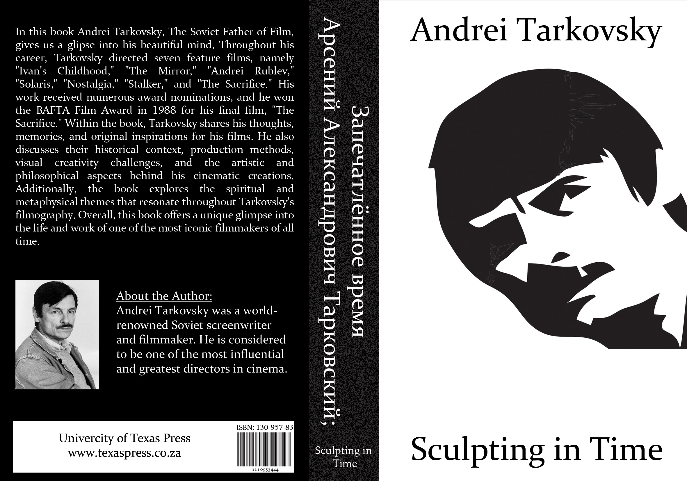

Graphics Communication is the process of conveying information, ideas, and messages through visual elements.
It is a powerful tool that combines the use of visual design principles, typography, color, and layout to effectively communicate complex concepts or data.
Graphics Communication is an essential means of visually conveying information in a clear, concise, and impactful manner.
All of the Graphics Communication projects below were created by me using only Adobe Photoshop.

The first image is a book cover design of Andrei Tarkovsky's book, 'Sculpting In Time,' of which 15 000 covers have been printed.
The second image entitled, 'Scream Of The Butterfly' won 5th place in the 2022 Durbanville Photography Competition.
The Film,'Into The Void,' was hailed as a 'creative masterpiece' by The New York Times and it's film poster is listed amongst 'The Top 15 Best Film Posters Of 2022.'